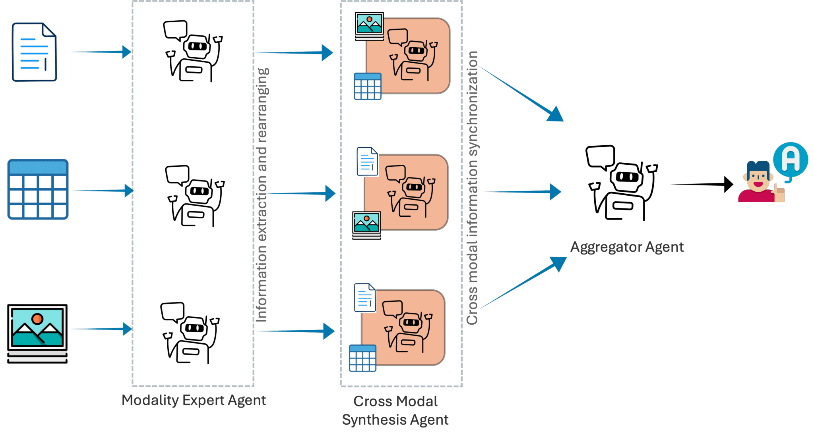
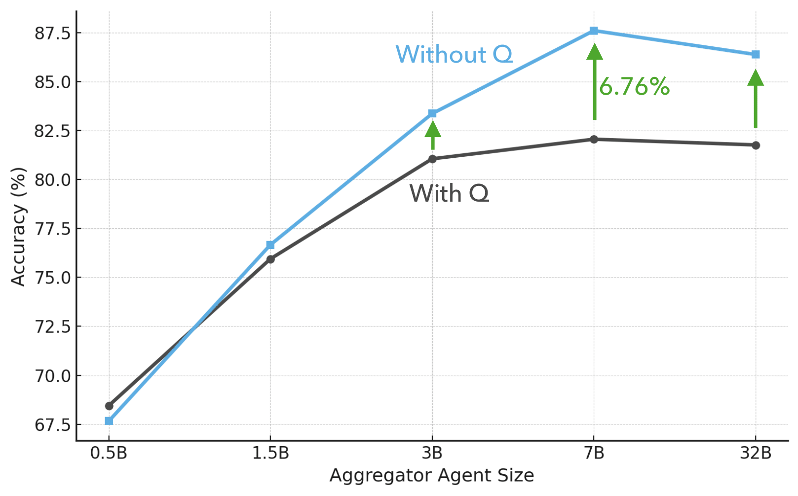

MAMMQA replaces one-size-fits-all multimodal reasoning with a cooperative pipeline of modality experts, cross-modal synthesis, and evidence-grounded aggregation for stronger accuracy, transparency, and robustness.
MAMMQA avoids flattening text, tables, and images into one generic workflow, which improves both faithfulness and interpretability.
How It Works
Three-agent cooperative pipeline
Two VLM agents decompose and synthesize grounded evidence, then an LLM aggregator produces the final answer.
What We Found
Static agents beat dynamic search
The lean multi-agent design outperforms CoT, CapCoT, and ToT across ManyModalQA and MultiModalQA.
Highlights
Interpretable decomposition: MAMMQA splits retrieval, synthesis, and answer generation into explicit stages.
Prompt-only framework: No fine-tuning is required; a shared agent template adapts across modalities.
Strong zero-shot results: The method outperforms standard prompting baselines on both ManyModalQA and MultiModalQA.
Better calibration: The aggregator can abstain when evidence is weak, reducing overconfident unsupported answers.
3Cooperating Agents
29,918MultiModalQA Pairs
10.44Qwen-7B Gain over ToT
0Fine-Tuning Required
Overview
A modular answer synthesis pipeline
Recent multimodal QA systems often rely on a single generalized reasoning policy. MAMMQA instead distributes the task across specialized agents so each modality can be analyzed on its own terms before fusion.
Modality experts: Probe text, tables, and images for grounded evidence.
Cross-modal synthesis: Reconcile evidence and resolve conflicts before answering.
LLM aggregation: Generate a final response strictly from the consolidated evidence.

Two VLM agents handle decomposition and synthesis, while a final LLM aggregator produces an evidence-grounded answer.
Why is Multimodal QA Hard?
Existing multimodal QA pipelines often use one generalized reasoning strategy or flatten all modalities into a shared format, which obscures the unique structure of text, tables, and images.
This weakens both answer quality and trustworthiness. MAMMQA addresses that gap with a cooperative multi-agent design that preserves modality-specific reasoning while making the intermediate steps explicit.
How MAMMQA Works
MAMMQA uses two Visual Language Model agents and one text-based Large Language Model. The first VLM decomposes the question and retrieves partial evidence from each modality. The second VLM synthesizes those findings through cross-modal reasoning. The LLM then integrates the evidence into a final answer.
Step 01
Decompose and Retrieve
Break the question into modality-aware subproblems and gather grounded evidence from text, table, and image sources.
Step 02
Cross-Modal Synthesis
Join partial findings, verify consistency across modalities, and surface a consolidated evidence set.
Step 03
Aggregate or Abstain
Generate the final answer only from the synthesized evidence, with the option to abstain if the evidence is insufficient.
Agents and Roles
Modality Experts (VLM): Decompose the question, inspect each modality independently, and extract grounded evidence.
Cross-Modal Expert (VLM): Reconcile signals across modalities and resolve conflicts before answering.
Aggregator (LLM): Produce the final response from evidence only, with a question-agnostic variant that improves calibration.
What’s New in MAMMQA
Framework
Prompt-driven multi-agent MMQA
MAMMQA organizes multimodal reasoning into interpretable stages without relying on task-specific fine-tuning.
Agents
Unified role-consistent prompting
A single prompt template is reused across text, table, and image experts, enabling transparent error tracing and efficient inference.
Performance
Stronger zero-shot results
The framework outperforms CoT, CapCoT, and ToT on major multimodal QA benchmarks and rivals several fine-tuned systems.
Robustness
Improved calibration under noise
Question-agnostic aggregation and explicit evidence routing reduce unsupported confident answers.
Qualitative Results
Representative Cases
Modality disambiguation: Experts independently probe text, table, and image sources before the aggregator selects the best-supported answer or abstains.
Cross-modal synthesis: Table values are verified against textual claims and visual evidence before final answer generation.
Failure behavior: When context is broken or shuffled, the system prefers abstention over hallucination.
The page structure is ready for qualitative visual examples if you want to add screenshots or step-by-step agent traces later.
The Benchmark
Dataset 01
ManyModalQA
Ambiguous-modality questions across text, tables, and images. This benchmark stresses modality disambiguation and targeted retrieval.
Questions10,190
Images2,873
Passages3,789
Tables3,528
Ambiguous modality
Splits: 2,036 train / 3,055 dev
Dataset 02
MultiModalQA
29,918 question-answer pairs, with 35.7% requiring cross-modal reasoning, making it a strong test for composition and synthesis.
QA Pairs29,918
Cross-modal share
Cross-modal composition
Splits: 23,817 train / 2,442 dev / 3,660 test
Quantitative Results
ManyModalQA
MAMMQA improves answer accuracy across modalities and consistently outperforms standard prompting baselines under several backbone models.
Methods
Text
Table
Image
Total
Human
92.00
89.60
94.00
91.60
Voting
23.70
22.90
15.50
21.10
MMQA
48.60
40.40
27.20
39.70
MMQA†
59.30
46.30
29.00
46.30
UniMMQA Finetuned T5 Model
Base
46.60
60.70
30.20
45.40
Large
48.50
67.50
34.90
50.00
3B
49.80
58.30
40.90
52.10
OpenAI 4o-mini
CoT
87.20
94.23
57.33
81.21
CoT*
68.22
70.51
59.42
66.54
CapCoT
87.68
94.05
68.26
84.41
ToT
84.94
93.19
72.90
84.70
Ours
92.50
96.78
78.02
89.90
Gemini 1.5-Flash 8B
CoT
86.05
91.52
68.77
82.81
CoT*
54.93
61.15
34.77
51.41
CapCoT
85.74
91.40
63.14
81.34
ToT
86.08
86.81
62.81
79.80
Ours
89.76
94.52
77.33
87.91
Qwen 2.5 VL 7B Instruct
CoT
59.84
68.71
45.47
58.87
CoT*
61.80
66.73
54.53
61.46
CapCoT
83.50
92.86
71.07
83.41
ToT
81.95
90.41
69.29
81.89
Ours
87.11
96.31
77.56
87.61
Qwen 2.5 VL 3B Instruct
CoT
70.08
75.61
50.70
66.54
CoT*
58.77
64.55
59.51
58.77
CapCoT
80.79
91.38
67.13
80.63
ToT
82.66
86.14
68.11
80.42
Ours
88.79
94.90
72.67
86.37
Superscript † denotes oracle; * indicates the no-context setting.
MultiModalQA
Best overall on 4o-mini, Gemini-8B, and Qwen-7B, with especially strong gains on table-centric and cross-modal questions.
The method stays competitive on smaller backbones while preserving interpretability.
Modality
Img
Tb | Img
Tb | Txt
Tb
Txt | Img
Txt
Total
OpenAI 4o Mini
CoT
33.15
53.81
66.67
84.55
55.95
77.67
64.60
CapCoT
53.91
64.98
69.05
84.14
61.90
77.33
70.39
ToT
54.97
63.35
64.37
67.70
61.11
69.65
64.88
Ours
61.31
70.30
81.58
89.16
59.75
85.57
76.37
Gemini 1.5-Flash 8B
CoT
47.41
53.38
58.88
74.73
46.43
72.82
62.16
CapCoT
47.84
50.02
55.87
74.88
39.29
72.42
60.66
ToT
36.93
43.06
52.32
53.72
33.33
70.61
53.10
Ours
51.23
54.12
57.42
83.69
42.86
79.47
65.84
Qwen 2.5 VL 7B Instruct
CoT
29.11
32.58
30.66
38.75
17.86
38.28
33.84
CapCoT
48.10
53.94
60.56
71.52
41.67
71.31
61.54
ToT
55.90
47.82
52.50
60.83
41.64
64.44
57.12
Ours
50.74
55.88
63.68
81.35
53.26
80.51
67.56
Qwen 2.5 VL 3B Instruct
CoT
11.86
23.71
22.14
32.25
14.29
25.52
23.15
CapCoT
48.10
42.08
47.08
64.94
39.29
65.04
53.98
ToT
42.01
43.65
48.40
52.57
33.74
66.51
52.91
Ours
33.73
43.10
45.33
62.29
35.52
67.73
52.12
Static vs dynamic search: On Qwen-7B, MAMMQA reaches 67.56 overall versus 57.12 for ToT, a gain of 10.44 points with a leaner reasoning pipeline.
Overall Comparison and Robustness
Model
Single
Multi
Overall
Finetuned Models
AutoRouting
51.7
34.2
44.7
ImplicitDecomp
51.6
44.6
48.8
Binder
–
–
51.0
SKURG
66.1
52.5
59.8
PERQA
69.7
54.7
62.8
Solar
69.7
55.5
59.8
UniRaG
71.7
62.3
67.4
AETGA
69.8
64.7
68.8
PReasM L
–
–
59.0
MMQA-T5 L
–
–
57.9
UniMMQA (T5 B)
–
–
67.9
UniMMQA (T5 L)
–
–
71.3
UniMMQA (T5 3B)
–
–
75.5
Zero-Shot Models
CoT Qwen 3B
23.75
22.24
23.15
CoT Qwen 7B
36.07
30.91
33.84
Our Agent 3B
57.72
43.39
52.12
Our Agent 7B
73.16
58.93
67.56
Model (7B)
Original
Text Shuffle
Irrelevant Context
TreeOfThoughts
57.12
33.01 (-42.21%)
52.45 (-08.18%)
CoT
33.84
31.18 (-07.86%)
29.54 (-12.71%)
CapCoT
61.54
37.47 (-39.11%)
55.39 (-09.99%)
OurAgent
67.56
05.92 (-91.24%)
63.74 (-05.65%)

Question-agnostic aggregation improves calibration by separating evidence synthesis from answer priors.
BibTeX
@inproceedings{anvekar-etal-2025-rethinking,
title = "Rethinking Information Synthesis in Multimodal Question Answering A Multi-Agent Perspective",
author = "Anvekar, Tejas and
Rajput, Krishna Singh and
Baral, Chitta and
Gupta, Vivek",
editor = "Inui, Kentaro and
Sakti, Sakriani and
Wang, Haofen and
Wong, Derek F. and
Bhattacharyya, Pushpak and
Banerjee, Biplab and
Ekbal, Asif and
Chakraborty, Tanmoy and
Singh, Dhirendra Pratap",
booktitle = "Proceedings of the 14th International Joint Conference on Natural Language Processing and the 4th Conference of the Asia-Pacific Chapter of the Association for Computational Linguistics",
month = dec,
year = "2025",
address = "Mumbai, India",
publisher = "The Asian Federation of Natural Language Processing and The Association for Computational Linguistics",
url = "https://aclanthology.org/2025.ijcnlp-long.192/",
pages = "3674--3686",
ISBN = "979-8-89176-298-5"
}